SYDE 671 · Introduction to Computer Vision · Assignment 3
[Auto]Stitching Photo Mosaics
Homographies, inverse warping, rectification, blended mosaics, and automatic feature matching with RANSAC
Abstract—Part A recovers homographies by least squares from hand-chosen correspondences (computeH, a 2n×8 system with h33 = 1), and warps images with two inverse-warping routines written from scratch: nearest neighbour and bilinear. Both are used to rectify a tower facade and two banners; on a synthetic test with a known answer, bilinear reaches 49.5 dB against 32.8 dB for nearest neighbour, at about 2.3 times the run time. Three clifftop beach photographs are then registered to the middle view and blended into one mosaic with a distance-transform feather and a two-band (low/high frequency) blend. Part B automates the correspondences: Harris corners (28,883 in the reference image) are thinned to 1,500 by adaptive non-maximal suppression, described by blurred, bias/gain-normalised 8×8 patches sampled from a 40×40 window, matched with Lowe's ratio test (0.7), and filtered by a from-scratch 4-point RANSAC (342 and 45 inliers for the two image pairs). The automatic mosaic is shown beside the manual one; the two agree closely, but the manual points were partly checked against the automatic result, so the agreement is not an independent test.
Index Terms—homography, direct linear transform, inverse warping, bilinear interpolation, image rectification, feathering, Harris corners, ANMS, MOPS descriptors, RANSAC, image mosaicing.
Scope. The assignment text asks for several mosaics. Following the course clarification, this report presents one mosaic with at least two images for Part A and one with at least three images for Part B. Both use the same three photographs, so the manual and automatic results can be compared directly. All code is written with NumPy and SciPy; none of the banned functions (cv2.findHomography, cv2.warpPerspective, cv2.getPerspectiveTransform, skimage.transform.warp, ProjectiveTransform) is used. The Harris detector is the supplied harris.py.
Part A: Image Warping and Mosaicing
A.1 Shoot the Pictures
The mosaic set is three handheld phone photographs taken from a cliff top over a beach: IMG_4826, IMG_4827 and IMG_4828, each downsized to 1200×900. I turned on the spot between shots, so the views are related by a rotation of the camera and a projective transform. Adjacent photographs overlap by roughly half of their width. IMG_4828, the middle view, is the reference frame, which keeps the distortion of the two outer images as small as possible.
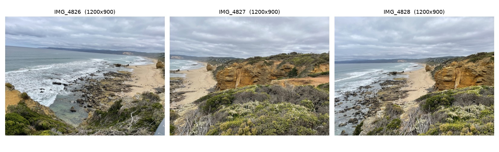
The rectification experiments in A.3 use two further photographs: a tower facade (IMG_5185) and a photograph containing two banners (IMG_1456).
A.2 Recover Homographies
A homography maps a point \((x,y)\) in image 1 to \((u,v)\) in image 2 as \(p'\sim Hp\), with \(H\) a 3×3 matrix whose lower-right entry is fixed at 1. Multiplying out the projective division gives two linear equations in the eight unknowns \(h=(a,b,c,d,e,f,g,h)^T\) for every correspondence:
Stacking \(n\) correspondences gives a \(2n\times 8\) system \(Ah=b\). With \(n=4\) it can be solved exactly, but it is unstable under noise, so I use more points and solve in the least-squares sense with numpy.linalg.lstsq.
def computeH(im1_pts, im2_pts):
"""Least-squares homography with h33 = 1. Needs n >= 4 points."""
p1 = np.asarray(im1_pts, float); p2 = np.asarray(im2_pts, float)
n = len(p1)
A = np.zeros((2 * n, 8)); b = np.zeros(2 * n)
x, y = p1[:, 0], p1[:, 1]; u, v = p2[:, 0], p2[:, 1]
A[0::2, 0:3] = np.c_[x, y, np.ones(n)]
A[0::2, 6] = -u * x; A[0::2, 7] = -u * y
A[1::2, 3:6] = np.c_[x, y, np.ones(n)]
A[1::2, 6] = -v * x; A[1::2, 7] = -v * y
b[0::2] = u; b[1::2] = v
h, *_ = np.linalg.lstsq(A, b, rcond=None)
return np.append(h, 1.0).reshape(3, 3)How the correspondences were obtained
I did not click the points with a mouse. They were found in three steps, and the third step matters for how the results should be read.
- Estimate by eye. I read distinctive static landmarks (shore rocks, two people on the beach, a beach rock, the cliff groove, a hill clearing) off gridded, zoomed views of both images. Accuracy was about 5–20 px.
- Refine by correlation. For each landmark, a 45×45 grey patch around the image-1 point was matched by normalised cross-correlation (
skimage.feature.match_template) inside a ±18 px window around the eyeballed position in image 2. The best match replaced the estimate. The points were then checked visually by me. - Sanity check against the automatic pipeline. Points that disagreed with the Part B homography were dropped (one hill-clearing match, 7 px off, and one low-correlation rock) and one pairing was corrected. For the six extra 4826 points added to fix conditioning (below), the search window in IMG_4828 was centred on the automatic prediction.
Results
| Pair | n | System size | Residual mean / max | Recovered H |
|---|---|---|---|---|
| IMG_4827 → IMG_4828 | 8 | 16×8 | 1.35 / 2.60 px | [[0.4799, 0.0235, 460.84], [−0.2132, 0.8436, 78.04], [−0.0004, 0.0000, 1]] |
| IMG_4826 → IMG_4828 | 13 | 26×8 | 1.40 / 3.13 px | [[1.718, −0.0151, −786.31], [0.1084, 1.3408, 52.03], [0.0007, −0.0002, 1]] |
The residual is the distance between \(Hp_1\) and the clicked \(p_2\). The full point tables, the complete \(2n\times 8\) matrix \(A\), the vector \(b\), \(h\) and \(H\) are in outputs/A2_p4827_4828.txt and outputs/A2_p4826_4828.txt. As an example, the first two rows of the 4827 system (shore rock at \((64,403)\) mapped to \((513,414)\)) are
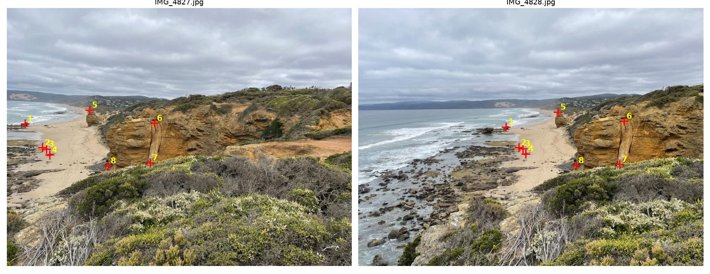
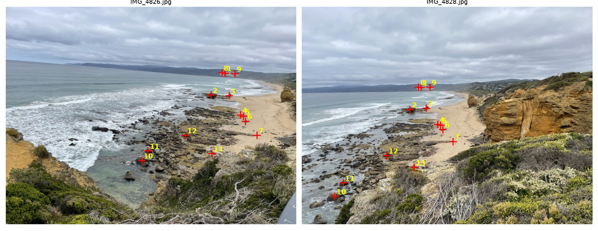
A conditioning problem and its fix
My first 4826 → 4828 fit used seven points and had a residual of about 2 px, which looks fine. But all seven lay in one patch of roughly 190×260 px, and the fitted homography sent the image corners thousands of pixels away from where the automatic homography (45 inliers) sends them. A small residual only says that \(H\) is consistent at the points; it says nothing about extrapolation. Adding six points across the overlap (the hill-clearing edges, a boulder pair, a boulder, a dark rock, a tidal pool) fixed this: the corners now land 3–51 px from the automatic result, while the residual stays at 1.4 px.
The 4827 homography was well conditioned from the start. Compared with the automatic one, the two agree to 0.7 px at the image centre and to 5 px at the left corners, but they differ by 47–57 px at the far right corners, which are extrapolated beyond the overlap.
A.3 Warp the Images
Both warping functions use inverse warping: for each pixel of the output canvas, the inverse homography gives a source position, and the output takes its value from there. This leaves no holes. The output canvas is found by sending the four image corners through \(H\) and taking the integer bounding box. The convention is that \((0,0)\) is the centre of the first pixel, so \((0.5,0)\) lies halfway between the first and second pixels.
def warpImageNearestNeighbor(im, H, bbox=None):
h, w = im.shape[:2]
bbox = bbox or warp_bbox(im.shape, H)
sx, sy = _inverse_coords(im.shape, H, bbox)
xi, yi = np.rint(sx).astype(int), np.rint(sy).astype(int)
valid = (xi >= 0) & (xi < w) & (yi >= 0) & (yi < h)
out = np.zeros(sx.shape + im.shape[2:])
out[valid] = im[yi[valid], xi[valid]]
return out, valid.astype(float), (bbox[0], bbox[1])
def warpImageBilinear(im, H, bbox=None):
h, w = im.shape[:2]
bbox = bbox or warp_bbox(im.shape, H)
sx, sy = _inverse_coords(im.shape, H, bbox)
valid = (sx >= 0) & (sx <= w - 1) & (sy >= 0) & (sy <= h - 1)
x0 = np.clip(np.floor(sx).astype(int), 0, w - 2)
y0 = np.clip(np.floor(sy).astype(int), 0, h - 2)
dx = np.clip(sx - x0, 0, 1)[..., None]; dy = np.clip(sy - y0, 0, 1)[..., None]
out = ((1 - dx) * (1 - dy) * im[y0, x0] + dx * (1 - dy) * im[y0, x0 + 1]
+ (1 - dx) * dy * im[y0 + 1, x0] + dx * dy * im[y0 + 1, x0 + 1])
out[~valid] = 0
return out, valid.astype(float), (bbox[0], bbox[1])Each function returns the warped image, an alpha mask (1 where the output pixel came from inside the source image and 0 where it is empty), and the canvas offset. The alpha mask is what the blending in A.4 uses to ignore empty regions. Neither function calls a library interpolator; the four-neighbour weights are written out explicitly. (The only library interpolation in the project is scipy.ndimage.map_coordinates, used when sampling descriptors in B.2, which is not part of the warping.)
Rectification
To test the code, I rectified three known rectangles: a tower facade, and two banners that both appear in IMG_1456. For each, the four corners of the object in the photograph were mapped to an upright rectangle with computeH. The corners were read off zoomed, gridded views of the photographs. The target sizes (300×600 for the tower, 300×700 for each banner) are my assumptions about the proportions of the real objects; I did not measure them, so the rectified shapes are plausible but not metrically exact.
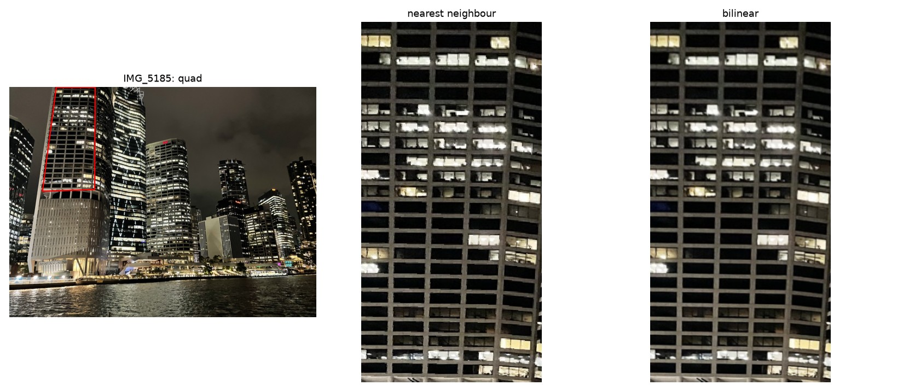
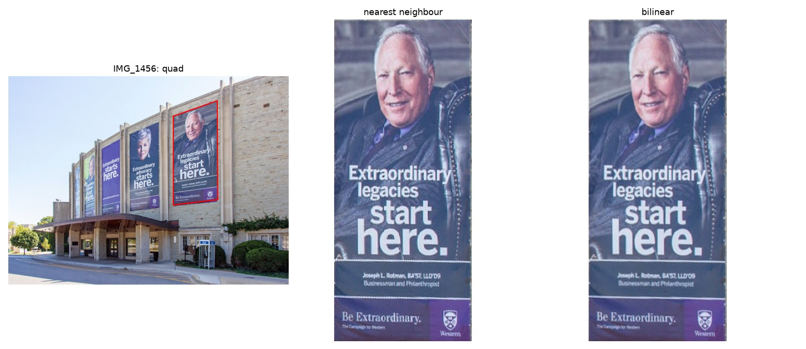
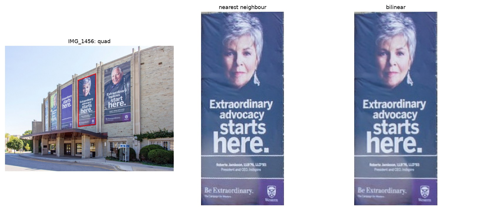
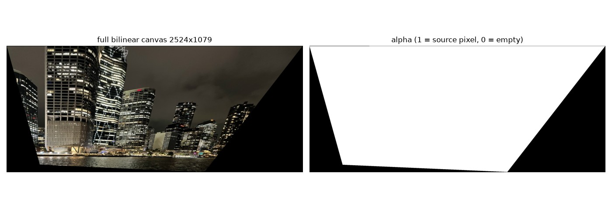
Nearest neighbour versus bilinear
Rendering the output at 4× makes the difference visible. Nearest neighbour copies the single closest pixel, so edges become staircases and thin lines break up. Bilinear mixes the four surrounding pixels, so edges are smooth, at the cost of a small amount of softening.
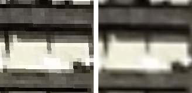
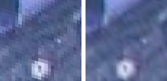
To measure quality rather than only look at it, I built a test with a known answer. The plane texture is an analytic function \(f(u,v)\) (a sum of three sinusoids). The "photograph" is \(f\) sampled exactly through the tower homography, with no interpolation anywhere. Rectifying it back with each method and comparing against \(f\) on the 180,000 valid pixels gives:
| Method | RMSE | PSNR | 300×700 output | 1200×2800 output | Typical slow-down |
|---|---|---|---|---|---|
| Nearest neighbour | 0.0228 | 32.8 dB | 16–20 ms | 355 ms | 1× |
| Bilinear | 0.0034 | 49.5 dB | 31–48 ms | 690–750 ms | about 2.3× (range 1.6–3.6×) |
Timings are the best of five runs on the banner homographies at three output scales; the full list is in outputs/A3_report.txt.
A.4 Blend the Images into a Mosaic
The mosaic uses all three photographs, with IMG_4828 as the reference. I use the three images because they give a wider panorama than two, and the same set is required for Part B. The procedure is:
- Homographies. \(H_{27}\) (4827 → 4828) and \(H_{26}\) (4826 → 4828) come from the A.2 correspondences; 4828 maps by the identity.
- Canvas. The four corners of each image are sent through its homography; the canvas is the union of the three bounding boxes (3243×1987 px).
- Warp. Each image is inverse-warped into the shared canvas with
warpImageBilinear, giving one layer and one alpha mask per image. - Weights. Each layer's weight is the Euclidean distance transform of its alpha mask, normalised to 1. It is largest deep inside the image and falls linearly to 0 at the image border, which is the "distance transform" suggestion in the assignment. At every canvas pixel the weights of the layers that cover it are normalised to sum to 1.
- Feathering (1 band). The output is the weighted average of the layers. This alone removes hard seams, but misaligned content in the overlap is averaged into a blur (ghosting).
- Two-band blend. Each layer is split into a low-pass part (Gaussian, \(\sigma=15\)) and a high-pass remainder. The low-pass parts are combined with the feather weights, which gives a smooth exposure transition. The high-pass parts, which carry the edges and texture, are taken from the image with the largest weight at each pixel, so they are not averaged. A hard choice produced thin lines where the winner changes, so the hand-over is softened by blurring the winner masks (\(\sigma=2.5\) px).
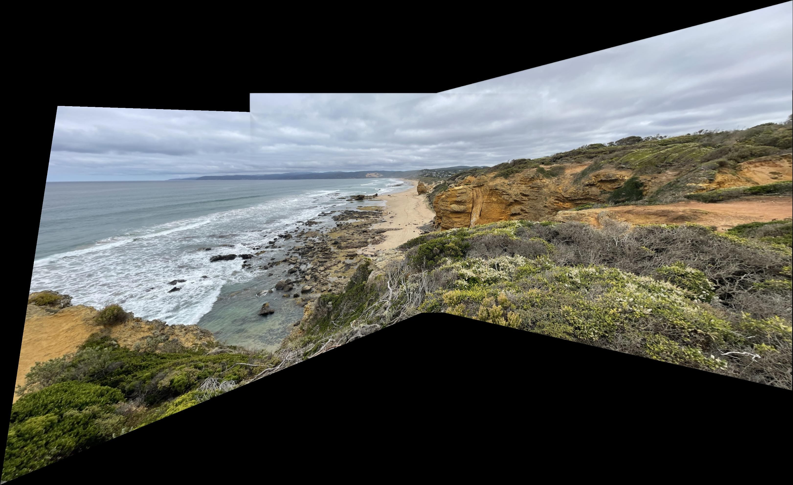
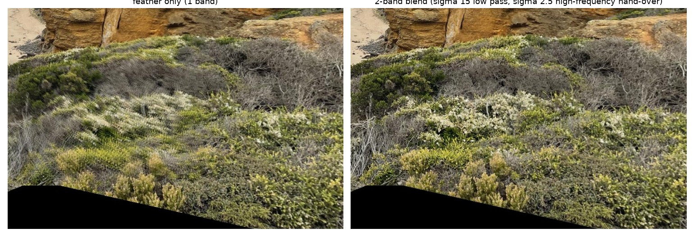
On the sky and the far shoreline the two methods look the same: the exposures of the three photographs already match, and distant content is well aligned, so a wide feather is enough there. The two-band blend matters in the near-field texture, where it avoids averaging misaligned pixels. The mean absolute difference between the two mosaics is only about 1.3 grey levels out of 255, so the benefit is local rather than global.
Remaining artifacts
- A faint diagonal line is visible in the sky at the left boundary of IMG_4826. It appears in both the feather-only and the two-band result, so it is not caused by the high-frequency selection. I suspect a slight exposure or vignetting difference at that image's edge, which a per-image gain correction would remove. I did not add one.
- The foreground shrubs are slightly stretched, and a few edges in them do not line up, because of parallax.
Part B: Feature Matching for Autostitching
B.1 Harris Corners and ANMS
I used the supplied Harris detector (single scale, 20 px border discarded). On IMG_4828 it returns 28,883 local maxima. Most of them are weak maxima in textureless sky, which are useless for matching and would swamp the later stages.
Adaptive non-maximal suppression (Brown et al., Section 3) keeps points that are both strong and well spread out. For each corner \(i\) with strength \(f_i\), its suppression radius is the distance to the nearest corner that is clearly stronger:
and the 1,500 points with the largest radii are kept. Because this needs a distance matrix over all candidate pairs, I only consider the 4,000 strongest corners; with all 28,883 the matrix does not fit in practical memory and the first version hung.
def anms(pts, strengths, n_keep=500, c_robust=0.9, max_candidates=4000):
top = np.argsort(-strengths)[:max_candidates]
pts, strengths = pts[top], strengths[top]
d2 = dist2(pts.astype(float), pts.astype(float))
stronger = strengths[:, None] < c_robust * strengths[None, :]
d2 = np.where(stronger, d2, np.inf)
radii = d2.min(axis=1)
keep = np.argsort(-radii)[:n_keep]
return pts[keep], radii[keep]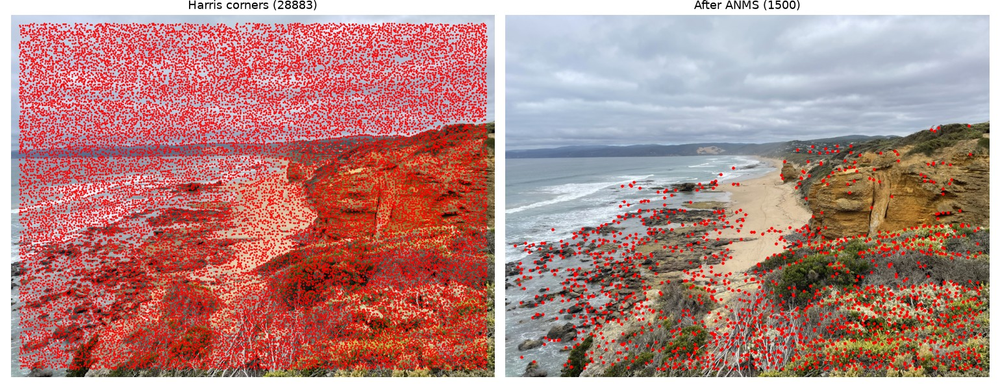
ANMS leaves the sky and open sea nearly empty, because their corner response is weak, and it places many points on the foreground shrubs. That is a poor place for matching, since the shrubs are the content with the most parallax (see B.3).
B.2 Feature Descriptors
For each kept corner I take a 40×40 window from the grey image, blurred with a Gaussian (\(\sigma=2\)), and sample an 8×8 grid from it with a spacing of 5 px (bilinear sampling, axis-aligned, no rotation). Sampling from the blurred larger window makes the descriptor insensitive to small localisation errors. Each descriptor is then bias/gain normalised, \(\hat d = (d-\mu)/\sigma\), so that it is unchanged by a uniform brightness offset and contrast scale. This gives a 64-vector per point.
def extract_descriptors(im, pts, window=40, size=8):
g = gaussian_filter(to_gray(im), 2)
step = window // size
offs = (np.arange(size) - size / 2 + 0.5) * step
oy, ox = np.meshgrid(offs, offs, indexing='ij')
desc = []
for x, y in pts:
p = map_coordinates(g, [oy + y, ox + x], order=1, mode='nearest')
desc.append(((p - p.mean()) / (p.std() + 1e-8)).ravel())
return np.array(desc)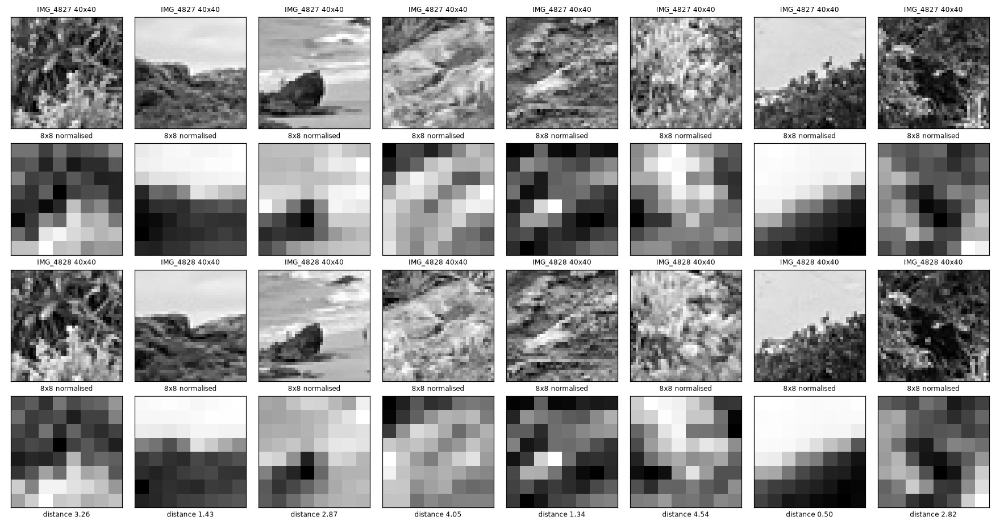
Two checks support the descriptors. First, bias/gain normalisation works as claimed: applying \(I\rightarrow 0.6\,I+0.15\) to the whole image changes the 200 test descriptors by at most \(5\times10^{-7}\) (the small residual comes from the \(10^{-8}\) added to the standard deviation), and every descriptor has mean 0 and standard deviation 1. Second, the descriptors discriminate: the eight matched pairs in Fig. B.2 are on average 2.6 apart, against 11.3 for randomly paired descriptors. The matched pairs were selected because they passed the ratio test and RANSAC, so the first number is optimistic; it shows that correct matches are close, not how often a close pair is correct. The check is in outputs/B2_report.txt.
B.3 Feature Matching
Each descriptor in one image is compared with all descriptors in the other by Euclidean distance. Following Lowe, a match is accepted only if the distance to the best neighbour is below a fixed fraction of the distance to the second-best neighbour. This rejects ambiguous features (repeated textures such as waves and foliage), whose two best matches are almost equally good. I tried three thresholds (Table B.0) and use 0.7. At 0.6 the weak 4826 link keeps only 12 matches, too few for a stable fit across the overlap. At 0.8 there are more inliers in absolute terms, but the share of rejected matches rises (16% against 10% for 4826 and 9% against 5% for 4827), so 0.7 is a compromise between quantity and purity rather than a sharp optimum.
| Pair | 0.6 | 0.7 (used) | 0.8 |
|---|---|---|---|
| IMG_4826 → IMG_4828 | 12 / 12 | 50 / 45 | 97 / 81 |
| IMG_4827 → IMG_4828 | 248 / 241 | 359 / 342 | 473 / 430 |
def match_features(d1, d2, ratio=0.6):
D = dist2(d1, d2)
order = np.argsort(D, axis=1)
i = np.arange(len(d1))
nn1, nn2 = D[i, order[:, 0]], D[i, order[:, 1]]
ok = np.sqrt(np.maximum(nn1, 0)) < ratio * np.sqrt(np.maximum(nn2, 0))
return np.c_[i[ok], order[ok, 0]]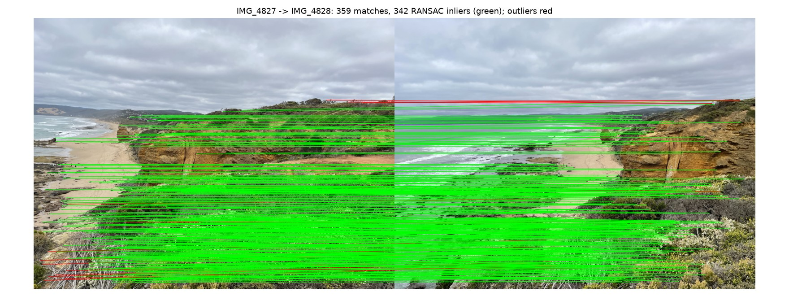
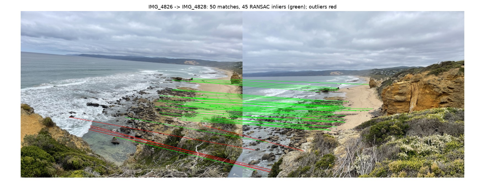
The descriptors are not scale- or rotation-invariant, so they work only because the three photographs share a focal length and orientation. Pairs with a zoom change would not match.
B.4 RANSAC and Automatic Mosaic
Some of the ratio-test matches are still wrong, and a least-squares fit is pulled far off by even a few of them. 4-point RANSAC fits the homography to random minimal samples and keeps the model that most matches agree with: repeat 5,000 times, pick four random matches, compute \(H\) with computeH, count the matches whose reprojection error is below \(\varepsilon=3\) px, and keep the largest consensus set. The final homography is refit by least squares on all inliers of the best model.
def ransac_homography(p1, p2, n_iter=5000, eps=3.0, seed=0):
rng = np.random.default_rng(seed)
best = np.zeros(len(p1), bool)
for _ in range(n_iter):
idx = rng.choice(len(p1), 4, replace=False)
H = computeH(p1[idx], p2[idx])
if not np.all(np.isfinite(H)):
continue
err = np.linalg.norm(apply_H(H, p1) - p2, axis=1)
inl = err < eps
if inl.sum() > best.sum():
best = inl
return computeH(p1[best], p2[best]), best| Pair | Ratio-test matches | RANSAC inliers | Automatic H |
|---|---|---|---|
| IMG_4827 → IMG_4828 | 359 | 342 | [[0.4759, 0.0085, 461.90], [−0.2100, 0.8202, 82.82], [−0.0004, −0.00002, 1]] |
| IMG_4826 → IMG_4828 | 50 | 45 | [[1.7756, −0.0134, −812.62], [0.1263, 1.3828, 40.59], [0.0007, −0.0002, 1]] |
Both automatic homographies were then used with the same blending code as in A.4 (three images, 4828 as the reference, two-band blend), so the only difference between the two mosaics is where the homographies come from.
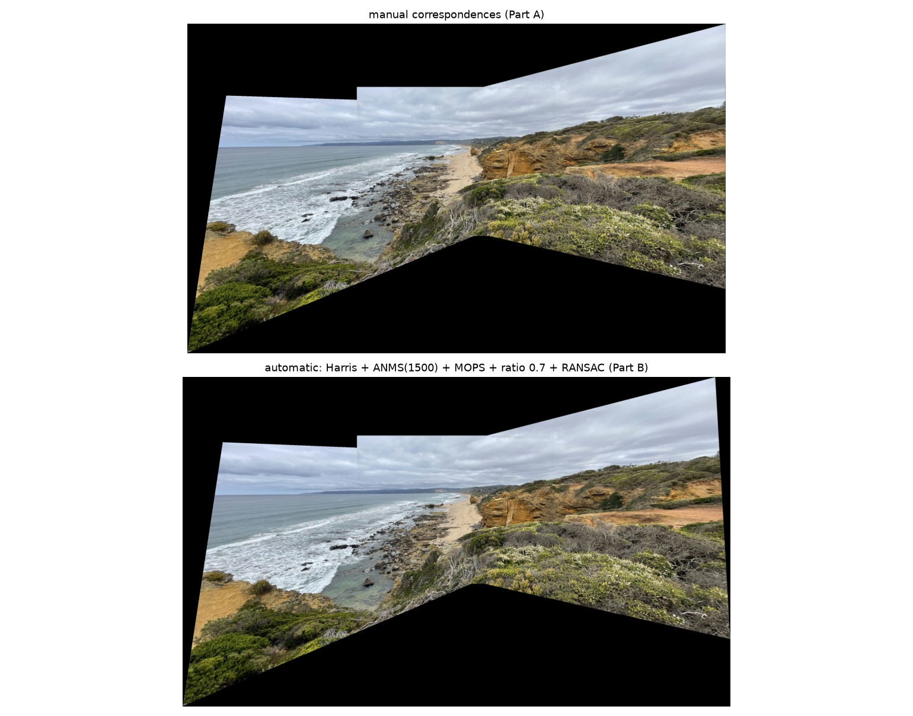
Manual versus automatic
| Pair | Image centre | Top left | Top right | Bottom right | Bottom left |
|---|---|---|---|---|---|
| IMG_4827 → IMG_4828 | 0.7 | 4.9 | 56.5 | 46.6 | 5.3 |
| IMG_4826 → IMG_4828 | 2.4 | 28.7 | 2.6 | 5.6 | 51.2 |
At the image centres, where the correspondences are, the two methods agree to 1–2 px. The disagreement grows at the corners that lie farthest from the overlap, where each homography is an extrapolation; in the mosaic those are the outer edges, which is why the canvas outline differs slightly. Because the manual points were screened against the automatic result (A.2), this agreement is expected and should not be read as proof that the manual points are independently correct. Where the two do differ, I cannot say from this data which is closer to the truth.
The advantage of the automatic pipeline is that it uses hundreds of points spread over the overlap (342 for the 4827 link) with no manual work, and it needs no judgement about which features are reliable. Its weakness is the 4826 link, where only 45 inliers survive and all lie in the middle distance, so the extrapolation to the far corners is the least certain part of that homography.
Limitations
- Manual points were not independent. They were estimated by eye, refined by correlation, and screened against the automatic homography (A.2). They were not mouse-clicked. A strictly manual comparison would need points chosen without the automatic result;
pick_points.pyis included for that. - Parallax. The camera was handheld and the foreground is close, so a single homography cannot align the shrubs. The two-band blend hides most of the resulting ghosting but not the stretching.
- Rectification sizes are assumed. The output proportions of the tower and banners (1:2 and 3:7) are plausible guesses, not measurements, and the tower is curved.
- Descriptors are not scale or rotation invariant, and the 4826 link has only 45 inliers.
- One mosaic per part. Following the clarification, I present one mosaic for Part A and one for Part B on the same three images.
- Exposure. A faint seam remains at the left edge of IMG_4826; no gain compensation is applied.
What I Learned
A small fitting residual does not mean a good homography. Seven well-fitting points in one corner of the image gave a homography that was off by thousands of pixels at the image corners, and only spreading the points across the overlap fixed it. Residuals at the data points must be paired with a check where the transform will actually be used.
Evaluating interpolation needs a ground truth. My first metric looked precise and meant nothing, while a synthetic texture with a known answer gave a clear 16 dB gap between the methods. Blending also showed that feathering is enough where images agree, and that the extra frequency band earns its place only where they do not.
Finally, ANMS and the ratio test do different jobs. ANMS decides where to look, and removes the thousands of noise corners in the sky; the ratio test decides which matches to trust, and removes ambiguous texture; RANSAC then removes what is left. The weak 4826 link shows what happens when each of those has little to work with.
Files, Sources, and Credits
Run python a2.py, python a3.py, python run_all.py and python report_figs.py in that order from this folder, in an environment with the packages in requirements.txt. Figures are written to outputs/; the web copies on this page are in media/.
stitch.py:computeH,apply_H,warpImageNearestNeighbor,warpImageBilinear,blend,harris,anms,extract_descriptors,match_features,ransac_homography.a2.py(A.2 tables and figures),a3.py(rectification and the interpolation study),run_all.py(A.4 and Part B),report_figs.py(extra report figures),pick_points.py(point-clicking tool).harris.py: sample Harris code supplied with the assignment, unmodified.points/*.json: the correspondences;A2_notes.md: how they were obtained;outputs/: figures and text reports.
- M. Brown, R. Szeliski, S. Winder, "Multi-Image Matching using Multi-Scale Oriented Patches", CVPR 2005.
- D. G. Lowe, "Distinctive Image Features from Scale-Invariant Keypoints", IJCV 2004 (ratio test).
- A. R. Smith, "A Pixel Is Not a Little Square" (pixel-centre convention).
- Assignment adapted from Berkeley CS 180 Project 3, and the course assignment sheet.
Photographs IMG_4826–4828 and IMG_5185 are my own. IMG_1456 (the banners) is an image obtained from the internet; its original source was not recorded.